大模型与智能体赋能硬件形式化验证：方向总览与论文解读
大模型如何帮助形式化验证：从 RTL 抽象、验证流程编排，到证明搜索与求解器优化。
第一章 研究范围与总体地图
大模型与智能体可以在硬件形式化验证的不同环节发挥作用：理解设计语义、简化模型、组织验证流程、寻找证明引理，以及优化求解器实现。这里关注 LLM 与智能体的接入方式。
NeuroAbs、Saarthi、Agentic-IC3 与 SATLUTION 分别展示了四种接入方式。它们解决的任务不同，不能直接比较实验数字：Saarthi 面向流程编排，SATLUTION 的实验则面向通用 SAT 求解。
1.1 形式化工具的四层理解
| 层次 | 工作 | LLM 接入机会 |
|---|---|---|
| 建模与简化 | 将 RTL、性质和假设转为模型，进行抽象、化简与分解 | 理解规格与场景，提出可检查的模型变换 |
| 调度与编排 | 安排验证引擎、参数、资源和执行顺序 | 根据运行反馈规划和调整求解流程 |
| 验证引擎 | IC3/PDR、BMC、归纳等方法组织证明与反例搜索 | 提出引理、指导泛化、调整证明路线 |
| 底层求解 | SAT/SMT 处理具体逻辑问题，BDD 进行符号运算 | 研究搜索指导及求解器代码优化 |
四层划分用于解释各环节的职责，具体工具的实现可能跨越多个层次。引擎反复调用求解器，抽象也可能在求解过程中继续精化；一篇论文可能跨层。
1.2 理解四类方法的三个关键问题
- 改变了什么？是 RTL 模型、工具流程、内部证明策略，还是求解器代码？
- 谁保证可靠？LLM 的建议通过什么检查后才能生效，最终结论依赖哪些假设？
- 收益是否划算？除求解时间外，还要计算生成、检查、重试和模型调用的成本。
三者共同决定一种接入方式的价值：建议需要可检查，检查之后仍需能改善实际验证任务。
第二章 方向一：LLM 辅助建模与抽象简化
这一方向的目标是：保持目标性质和可靠推理关系，同时让交给验证器的问题更容易求解。减少公式复杂度、放松数据关系、构造模块契约，都可能发挥作用；不必都表现为减少状态数。
2.1 传统工作方式与瓶颈
工具通常进行影响锥 COI、常量传播和逻辑化简；工程师也会根据场景设计抽象。COI 追踪结构依赖，但多个操作共享结果信号时，结构上相关的逻辑在特定场景下未必需要完整保留。人工语义判断能补充这一点，却耗费经验和时间。
2.2 如何评价这一方向
- 正确性：变换是否保留原设计行为？新增假设有没有依据？
- 有效性：模型是否真正变得容易求解，而不是复制原代码？
- 成本：LLM 生成、可靠性检查、精化和最终证明的总时间是多少？
- 适用性：不同设计、性质、后端与场景是否仍有收益？
NeuroAbs 通过场景相关的 RTL 抽象降低求解难度；模块契约与分区验证则从组织结构上减少需要同时处理的细节。
2.3 NeuroAbs：基于语义理解的 RTL 抽象
原文：NeuroAbs: A Neuro-Symbolic RTL Abstraction Framework for Property Checking Acceleration。作者 Zhiyuan Yan、Xiaofeng Zhou、Ziyue Zheng、Ziyi Yang、Wenbin Che、Wei Zhang、Yangdi Lyu、Hongce Zhang。
论文版本：arXiv:2608.17304v1，共 9 页；原文页面标注 ICCAD 2026 录用，DOI：10.1145/3831252.3834042。摘要与版本 · 原文全文。
2.3.1 一句话理解与问题定义
LLM 根据规格和验证场景提出 RTL 简化，由 SMT 检查简化是否保守，再通过反例反馈恢复必要细节，试图加速现有模型检查器。
例如处理器支持 ADD、SUB、MUL，但这次验证 ADD 的结果。直接送入完整实现会带入大量运算和控制关系。挑战是找到可省略的细节，又不能偷偷删除原设计可能出错的路径。
| 输入 | 输出 | 没有更换的内容 |
|---|---|---|
| RTL、规格、场景、目标性质及已有环境设置 | 经过检查并按需精化的抽象 RTL，供后端验证 | 要证明的目标；不能任意添加更强环境限制 |
2.3.2 方法总览
规格、场景、RTL、目标性质
↓
Signal Analyzer：理解场景并映射信号
↓
静态分析 + AST：定位候选语句，限制改写范围
↓
Abstractor：提出 RTL 抽象改写
↓
Z3：检查原行为是否被包含
↓
AVR / rIC3：检查抽象模型
↓
证明完成 / 反例分析与精化 / 未确定
↑ │
└─ 恢复相关细节 ─┘LLM 主要参与前面的语义判断和改写提议。后面的包含检查、模型检查与反例精化由程序和符号方法承担。论文第 3 节、图 2 介绍整体流程。
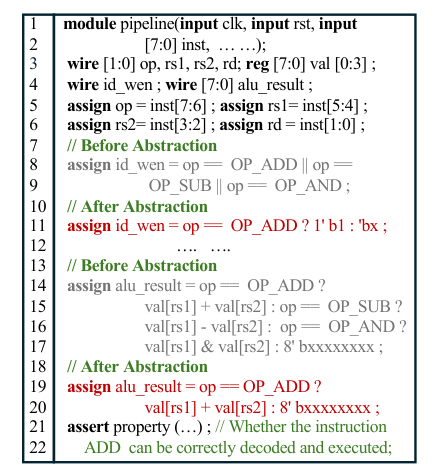
来源：NeuroAbs，arXiv v1，第 2 页，图 1。原图裁剪，未重绘；附中文说明。
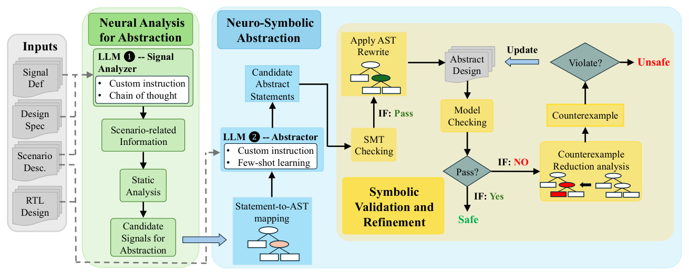
来源：NeuroAbs，arXiv v1，第 3 页，图 2。原图裁剪，未重绘；附中文说明。
2.3.3 第一步：理解场景，定位候选代码
Signal Analyzer 首先从规格和验证场景理解相关概念，再结合 RTL 信号声明映射实际信号名。例如“运算类型”可能叫 op，“指令字”可能叫 inst。接着静态分析沿数据依赖和控制依赖追踪代码。
数据依赖回答“结果由哪些数值算出”；控制依赖回答“哪个条件决定采用哪种计算”。LLM 提供语义线索，程序追踪确定的代码关系，避免让模型自由寻找并改写整个工程。
inst 的操作字段 → op → 选择 result 的运算分支
↑
a、b定位时考虑 op=ADD，可以帮助看出其他分支的抽象机会。但这是分析候选位置的场景信息，不自动变成验证器中的“op 永远为 ADD”。任何最终抽象仍要独立接受包含检查。
这一阶段的定位可能不够好，影响优化收益；它本身不是最终正确性保证。
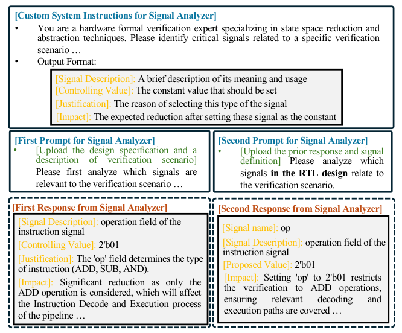
来源：NeuroAbs，arXiv v1，第 3 页，图 3。原图裁剪，未重绘；附中文说明。
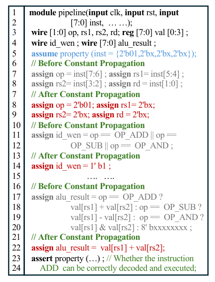
来源：NeuroAbs，arXiv v1，第 4 页，图 4。原图裁剪，未重绘；附中文说明。
2.3.4 第二步：AST 限定位置，LLM 提议改法
AST 将代码组织成条件、赋值、分支等语法节点。程序定位允许修改的完整语句，提供周围上下文；Abstractor 仅改写所指定区域。AST 决定“哪里能改”，LLM 提议“怎样改”，数学检查判断“能否接受”。
以下是便于解释的示例；“任意值”也不是可直接复制的 Verilog 语法。
原设计：
if op == ADD:
result = a + b
else if op == MUL:
result = a × b
else:
result = 其他计算
候选抽象：
if op == ADD:
result = a + b
else:
result = 任意值任意值允许该位宽内所有取值。它不等于随机抽取一次，也不等于填 0。论文把改写中的 X 映射为符号非确定变量处理，不能随意套用其他仿真或综合工具的 X 语义。
为什么行为变多，反而可能更容易？原来求解器必须处理乘法等输入输出关系；取消这些关系后，公式结构可能更简单。它是在放松约束，而不是保证减少所有状态。
论文实验两个角色均使用 gpt-4o-mini-2024-07-18，并提供 8 个原始/抽象语句示例。它是分工明确的 LLM 流程，不等同于具有自主行动规划的通用 Agent。
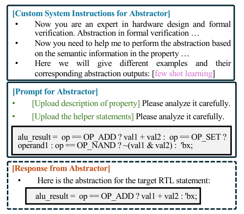
来源：NeuroAbs，arXiv v1，第 4 页，图 5。原图裁剪，未重绘；附中文说明。
2.3.5 第三步：SMT 检查行为包含
接受抽象的关键方向是：
原设计的行为 ⊆ 抽象模型的行为即允许多出行为，但不能漏掉原本可能发生的行为。对同样的输入 a=2、b=3，原乘法只能输出 6；任意值允许 6 及其他值，固定 0 却排除了 6。
| 候选 | 行为包含 | 优化意义 |
|---|---|---|
| result = 任意值 | 可以保留乘法全部可能结果 | 移除乘法关系，但可能引入假警报 |
| result = 0 | 通常不满足 | 可能删掉真实错误路径，不可接受 |
| 保留乘法 | 满足 | 没有实际简化 |
SMT 检查可以理解为寻找“原语句允许、候选却不允许”的取值。若存在则拒绝；证明不存在才通过；超时或 unknown 不等于通过。
论文第 3.4 节将语句转为 SMT 关系，并对新增非确定变量进行量化处理。这里的解释是包含关系的直观含义；实际编码需同时准确处理输入、输出、当前/下一状态、位宽和量词作用域，不能将赋值简单当作普通数值表达式比较。
对安全性质，如果抽象系统允许更多行为却仍被证明安全，那么原系统也安全。这个推理依赖初始状态和转移行为的可靠包含，以及性质的正确对应。论文以局部检查和未修改部分保持不变论证组合模型的保守性；前端与检查器实现仍属于可信基础。
2.3.6 第四步：反例缩减与恢复细节
例如：a、b 在 0～3，result 位宽足够，原语句 result=a×b，目标 result≤9。抽象为任意值后，验证器可报告 a=2、b=3、result=15。原电路只能输出 6，所以这是抽象额外制造的虚假反例。
- 检查抽象模型的目标性质。
- 有反例时，缩减与失败无关的信息，使分析聚焦于关键原因。
- 定位与失败有关的非确定辅助输入和被改写语句。
- 恢复相关语句的原始逻辑，保留其他抽象。
- 再次验证，直至得到可靠结论或达到资源限制。
这就是论文第 3.5 节的 R-CEGAR。缩减反例有助于避免每次恢复全部 RTL。恢复的是相关原语句，不必依赖 LLM 再次自由重写。
反例涉及抽象语句，不足以直接说明它是虚假的。真实 bug 也可能经过这些语句，仍需严格分析、恢复或检查原模型中的可行性。算法图中“无反例”应理解为验证器给出证明，不能把有界未报错或超时当作 SAFE。
可靠抽象不一定有用：抽象太少，求解仍然困难；抽象太多，假警报和精化成本可能很大。系统需要在二者之间取得平衡。
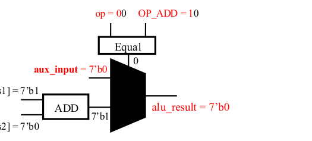
来源：NeuroAbs，arXiv v1，第 6 页，图 6。原图裁剪，未重绘；附中文说明。
2.3.7 实验：收益及数字的正确读法
论文第 4 节采用 Yosys/Pyverilog 进行分析和解析，Z3 检查改写；后端为 AVR development branch 和 rIC3 的 HWMCC 2024 版本。机器为 2.9 GHz Xeon Platinum 8375C、256 GB 内存。
| 设计 | 场景数 | RTL 行数 |
|---|---|---|
| PicoRV32 | 8 | 3,079 |
| Piccolo | 22 | 14,943 |
| Flute | 22 | 17,228 |
| I2C | 3 | 1,257 |
表 1 共四个设计、55 个场景。正文一处称 three designs，与表不一致，此处按表 1 统计。
| 指标 | 作者报告结果 | 能说明什么 |
|---|---|---|
| 候选语句过近似通过率 | 95.27% | 改写通过局部检查的比例，不是芯片正确率 |
| AVR 平均证明时间 | 607.03 → 334.56 秒 | 证明阶段降低约 44.89%，不是全流程加速 |
| rIC3 平均证明时间 | 18.71 → 16.94 秒 | 该后端收益较小，效果依赖算法和任务 |
| Piccolo 平均 BMC 深度 | 109.36 → 125.36 | 预算内可探索更深，不代表无界证明 |
| Flute 平均 BMC 深度 | 129 → 225.09 | 同上，也不等于已发现更多真实 bug |
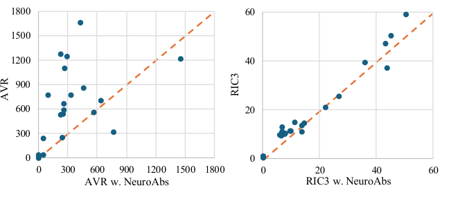
来源：NeuroAbs，arXiv v1，第 7 页，图 7。原图裁剪，未重绘；附中文说明。
2.3.8 消融：通过检查，不等于有用
表 2 一个重要发现：去掉 few-shot 和定制指令后，过近似通过率达到 96.46%，甚至略高，但平均严格抽象语句数由 236.17 降至 3.83。原因是大量候选只是复制原语句：当然可靠，却几乎没有优化作用。
评价 LLM 模型变换必须同时检查“可靠性”和“非平凡优化”，不能只报合法或证明通过率。
2.3.9 局限、成本与复现问题
- 总成本：表 4 另列 LLM 生成及精化成本，需要与后端证明时间合计；原本很快的任务可能不值得调用模型。
- 泛化：四个设计、场景特定，尚不足以证明对所有 RTL 与性质普遍有效。
- 可信边界：量词编码、局部变换组合和 RTL 前端语义需要实现复核，不能只凭 LLM 文本判断。
- 复现：复现需要提示词、分析规则、代码版本、原始属性、超时及结果汇总口径。
- 领先性：说明能增强两个已有后端，但不是对所有 LLM 抽象方法的统一 SOTA 排名。
2.3.10 从论文提炼接入范式
LLM 提语义变换 → 程序限制权限 → 符号工具检查 → 反馈驱动恢复这一范式让生成能力与严格检查互补。值得继续研究的问题包括：一次抽象能否被多条性质复用？如何减少无价值改写与生成成本？能否把精化信息反馈给下次候选选择？这些问题决定了方法能否在更大规模的验证任务中取得实际收益。
第三章 方向二：验证流程调度与编排
验证编排包括流程组织和引擎资源调度。流程组织连接规格理解、属性生成、编译、证明和覆盖分析；资源调度则决定引擎选择与计算预算。Saarthi 展示的是前一种能力。
3.1 Saarthi：多智能体验证工作流
论文：Saarthi for AGI: Towards Domain-Specific General Intelligence for Formal Verification。Aman Kumar、Deepak Narayan Gadde、Luu Danh Minh、Vaisakh Naduvodi Viswambharan、Keerthan Kopparam Radhakrishna、Sivaram Pothireddypalli，Infineon。论文版本：arXiv:2603.03175v1，共 12 页，预印本。原文及版本记录。
研究沿革与版本边界：这一框架的前作是 Saarthi: The First AI Formal Verification Engineer（DVCon U.S. 2025）。前作建立流程编排，本节选择的 2026 年后续论文进一步加入规则手册、GraphRAG 与覆盖反馈。两篇的作者列表、模型、设计集合和表格不同：本节六设计、GPT-5、HIL 对照来自 2026 年论文，不与 2025 年十五设计实验混用。另有 Agentic AI-based Coverage Closure for Formal Verification（2026） 专门研究覆盖率闭环，侧重覆盖率闭环。它们的贡献集中于流程级自动化。
3.1.1 问题：能生成断言，还不等于完成验证
一条断言从文字要求到正式验证，要经历理解接口、绑定信号、语法检查、证明、反例解释、空真检查和覆盖反馈。任何一步出错都可能让流程停住。论文研究如何将这些工作拆成专门角色，再通过反馈组织起来。
例如：验证“请求后两周期内收到响应”。生成器可能写错时钟沿，修复后又绑定错信号，最终证明通过却发现请求从未发生。把一次生成看作完成任务，会忽略后续工作；编排层需要知道下一步该运行什么检查、把失败交给哪个角色。
3.1.2 架构：专业分工和协调者
Saarthi 基于 Microsoft AutoGen，支持顺序或层次执行；论文明确说明实验中的形式化流程按顺序安排角色。架构图的多角色不能直接理解为这些角色在实验中全部并行执行。
| 角色 | 主要工作 | 反馈去向 |
|---|---|---|
| Formal verification lead | 组织验证计划与工作顺序 | 分派生成、修复与覆盖任务 |
| 属性生成与评审 | 从规格形成候选 SVA，检查规则符合性与完整性 | 修改候选，绑定模块和信号 |
| 语法分析、修复、验证 | 识别解析或编译错误，修复并重新检查 | 失败进入修复循环 |
| 覆盖分析 | 定位遗漏行为与插入位置，提出新属性需求 | 回到属性生成 |
| 代码提取与执行 | 落地生成产物、接入环境、调用检查 | 返回工具诊断与证明报告 |
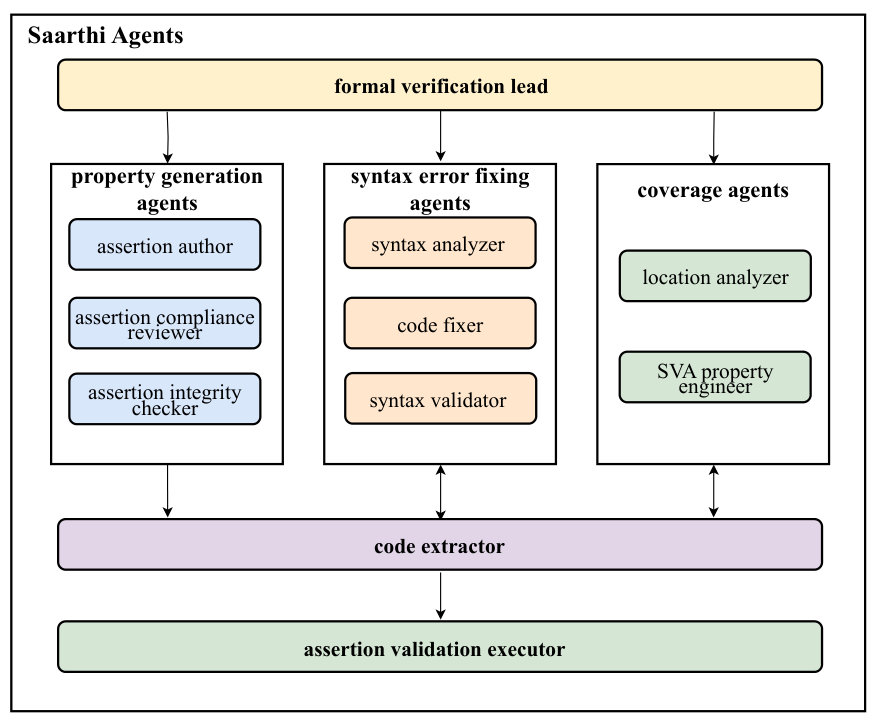
来源：原文v1，第4页；原图裁剪，附中文说明。
3.1.3 工作循环：按错误类型安排下一步
规格与 RTL → 计划与候选属性 → 语法/编译检查
↓
形式化执行与报告
↓
语法错误回修复 / 失败与空真回分析 / 覆盖缺口回生成
↓
达到预设停止条件，或触发人工参与论文给出迭代上限，无法收敛时进入 HIL（human-in-the-loop）。人工修改后的提示、上下文、错误类型和修复结果会记录到案例库。这里的“学习”可以是缓存与提示更新，不能一概理解为对模型参数训练。
3.1.4 规则手册和 GraphRAG：减少反复犯错
规则手册把信号、时钟、条件和时间窗口写成结构化描述，记录常见错误。RAG 提供标准、规格等文本证据；GraphRAG 将需求、信号、属性和证明结果建立关系，便于跨资料检索。
例如：检查总线最后一拍，既要找到长度字段的含义，也要知道只有握手成功才增加拍数。图检索可以把这些分散规则一起提供给生成器。检索有助于理解，但检索到一段文字不等于已证明当前断言准确。
3.1.5 可靠性：不同检查负责不同承诺
- 评审 Agent 提供建议，不能代替可执行的语法与形式化检查。
- 编译通过只说明语法和绑定可被工具接受，不说明性质符合规格。
- 证明通过针对给定假设与属性，不代表属性完整或非空真。
- 覆盖与人工审核仍重要；修复时尤其不能为追求通过率而随意削弱性质、增加假设。
论文展示规则、工具反馈和 HIL 的工程闭环，没有给出整个多 Agent 流程的数学正确性证明。标题中的 AGI 是作者愿景，不能当作已实现通用智能的结论。
3.1.6 实验：覆盖反馈和人工参与是否有效
实验比较 GPT-4.1、GPT-5 和 Llama 3.3，六个 RTL 设计包含 ECC、Automotive IP、Memory Scheduler、AXI4Lite、CIC Decimator、Float Multiplier。Pass@1/2/3 是论文相应生成/尝试设置，不能理解为芯片通过签核的概率。
| 设计 | GPT-5 无 HIL 覆盖 | GPT-5 有 HIL 覆盖 |
|---|---|---|
| ECC | 92.83% | 95.22% |
| Memory Scheduler | 50.00% | 62.02% |
| AXI4Lite | 44.06% | 67.06% |
| Float Multiplier | 64.72% | 92.83% |
以上取自表 II 的 Pass@1 对照，不能混同于模型间比较或全部无人工自动完成。覆盖数字需要结合工具口径解释，不能解释为覆盖同等比例的所有状态或规格。
表 III 显示重复自动生成不保证持续改善：Automotive IP 断言从 59 增至 233，覆盖反而从 80.56% 降至 72.69%；Float Multiplier 覆盖则从 64.72% 升至 82.45%。这是“更多断言不等于更充分验证”的直接例子。正文称 Automotive 覆盖稳定改善，与表中趋势不一致，表中数据表明，迭代生成的覆盖收益并不单调。
3.1.7 局限与在四层地图中的位置
这是一篇工作流编排代表论文，不是多引擎资源调度的 SOTA 证据。样本六个，规格质量和 HIL 影响较大；规则、RAG、角色分工各自收益还需更严格消融；完整实现与实验配置的公开程度也影响可复现性。摘要中的“准确率提高70%、迭代减少50%”缺乏本节可直接对应的统一比较口径，因此不作为主结论。
值得研究：怎样根据错误类型选择下一个动作？何时停止低收益循环？如何追踪“原始需求→属性→证据”的一致性？以后可继续寻找真正根据引擎进展分配资源的 LLM 研究，补足本层另一部分。
第四章 方向三：验证引擎内部证明搜索
这一方向保持 RTL、目标性质和环境条件不变，研究 LLM 如何进入证明算法的决策过程。关注的问题是：什么中间关系值得证明、怎样概括当前失败状态、何时换一条路线。它区别于在工具外生成目标断言，也区别于修改底层 SMT 的分支搜索。
4.1 方向概述：从固定启发式到语义指导
传统引擎主要依靠逻辑结构与人工设计的启发式推进搜索。LLM 的机会在于同时阅读 RTL 含义和证明反馈，提出有设计意义的中间关系；风险是错误建议、调用延迟和无效搜索。评价需要同时记录解决数、端到端耗时、模型成本与严格检查机制。
4.2 Agentic-IC3：语义驱动的 IC3 证明搜索
原文：Agentic-IC3: Enabling Semantic Proof Search in IC3 Model Checking。作者 Yu-Wei Fan、SooHyuk Cho、Aarti Gupta、Sharad Malik，Princeton University。论文版本：arXiv:2609.27162v1，20 页，2026 年 9 月预印本。原文与版本入口。
4.2.1 一句话理解：目标已知，但证明路线难找
输入是 RTL、目标安全性质与环境设置；输出仍是证明安全、反例或未确定。Agent 不随意修改最终目标，而是参与 IC3 内部寻找引理、组织证明义务与修订搜索路线。最困难的部分往往不是检查一个候选公式，而是找到值得检查的中间关系。
可以类比为：做数学题时，知道题目和最终结论，也不等于知道应该先证哪个辅助结论。LLM 在这里帮助找思路，形式化后端负责检查思路中的具体承诺。
4.2.2 IC3 基础：从坏状态往回追，逐步建立屏障
形式化模型用 Init 表示初始状态，T 表示一步状态变化，P 表示目标性质。IC3 维护一组 frame，即 F₀、F₁、F₂……，对不同深度可达状态进行过近似。这些集合是嵌套关系，不是互不相交的分区，也不是逐周期仿真波形。
它考察可能违反 P 的状态，追问哪些前驱能够一步进入它。如果前驱确实从初始状态可达，就可能组成真实反例；如果可以证明相关区域不可达，就加入经过检查的引理排除它们。引理描述的是可以保留的关系，反过来排除不满足关系的状态。
发现危险状态 → 查询前驱 → 追查更早的证明义务
↓
检查并加入引理，排除不可达区域
↓
找到真实反例 / 得到归纳不变式 / 未确定局部 frame 引理不自动是永远成立的全局不变式。最终安全证明需要一组关系在初始状态成立、经过任何合法一步转移后仍保持，并足以蕴含 P。
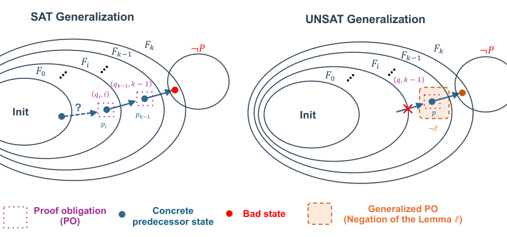
来源：Agentic-IC3 v1，第 4 页。原图裁剪，附中文说明。
4.2.3 原论文例子：看出两个控制器之间的整体关系
论文图 2 使用两个控制器副本做信息流验证。两边共享 a 和 reset；a 为零时都装入零，否则环境假设要求 b1=b2，两边因此装入相同数值，并按相同规则更新。目标是 finish1=finish2，即两边完成信号一致。
传统位级推理可能先积累某个寄存器位为零等零散事实。阅读 RTL 的 Agent 可以提出 state1=state2 这样的整体关系，再结合计数器关系帮助推进证明。这里 b1=b2 是原例中带条件的环境要求，不是模型为了通过证明临时编造的假设；也不能认为只证明状态相等这一条就一定足够。
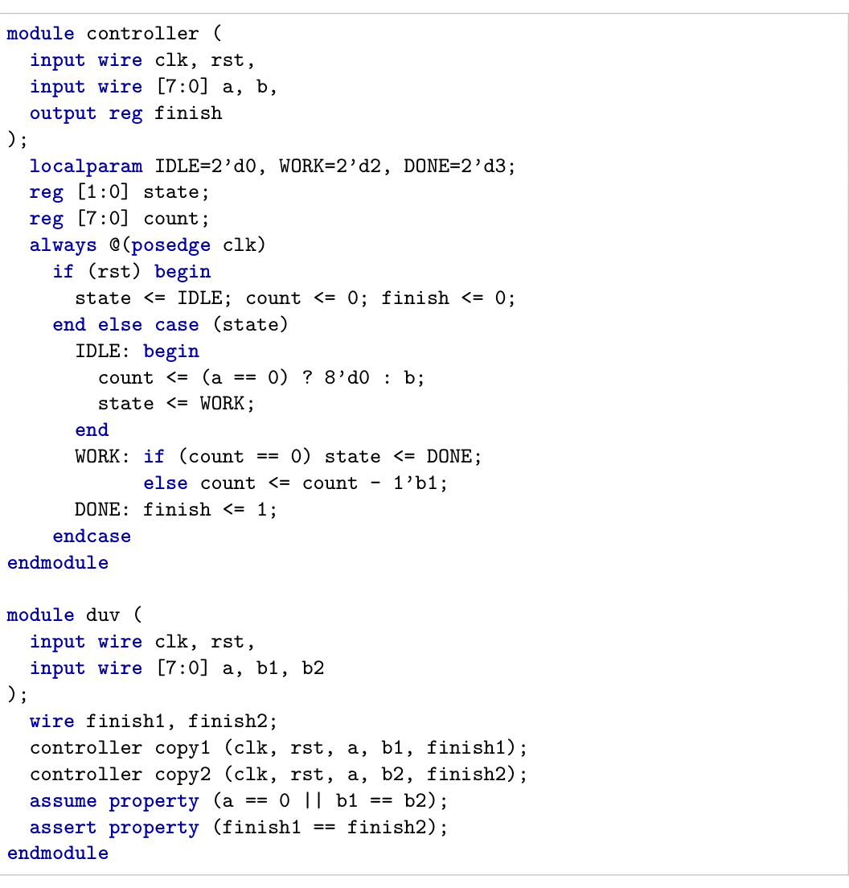
来源：Agentic-IC3 v1，第 5 页。原图裁剪，附中文说明。
4.2.4 架构：Agent 在内环提出建议，内核维护证明
RTL 经 Yosys 转成字级 BTOR2 模型；Python 实现基于 Pono，底层使用 Bitwuzla。Agent 还能读原始 RTL，以设计信号名和受支持的 Verilog 表达式子集沟通。表达式先经过解析与类型检查，再转入后端。
证明内核保存 frame、已接纳引理、待处理义务和观察表达式。长生命周期会话通过 JSON Lines 接口交互，Agent 的每次调用不会让证明从零开始。这是接入持续演化的证明状态，不是简单重复调用一个完整工具命令。
IC3 内核：当前目标、frame 引理、前驱/阻断事实
↓
LLM Agent 读取 RTL 与累计反馈
↓
Propose 提引理 / Observe 增加观察 / Backtrack 回退
↓
内核解析、检查、递归证明并更新合法状态
↓
新的证明反馈返回 Agent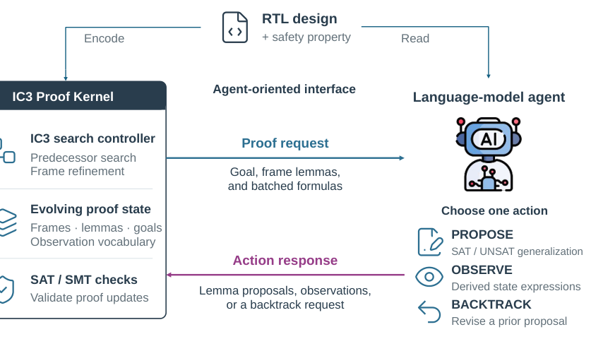
来源：Agentic-IC3 v1，第 7 页。原图裁剪，附中文说明。
4.2.5 Propose：分别处理 SAT 与 UNSAT 两种反馈
这里 SAT/UNSAT 指内部某个逻辑查询的结果，不是整个设计是否安全。查询可以简写为“在前一层允许的状态中，是否存在一步能进入当前待排除区域的前驱”。
| 情形 | 内核发现什么 | Agent 做什么 | 后端如何处理 |
|---|---|---|---|
| SAT：存在前驱 | 找到可能引向危险区域的状态 | 根据多组前驱与 RTL，提出能排除部分前驱的关系 | 检查是否有排除作用，先用 BMC 找候选的浅层反例，再递归证明对应义务 |
| UNSAT：不存在相应前驱 | 当前区域可以尝试阻断，已经得到一些局部事实 | 把多个阻断事实概括为更有意义的关系 | 检查初始成立和相对归纳，再把合法引理加入相应 frame |
SAT 分支的关键：Agent 可以超越对单个前驱的局部概括，提出更宽范围的关系。但更大胆的关系可能误删可达状态，所以必须验证。BMC 在这里用于提前找错；在深度内未发现违反，不等于已经证明引理永远成立，后端还要递归处理。
UNSAT 分支的关键：Agent 提议的关系需要能够蕴含准备替换的阻断事实。一个更简洁的公式不一定更强、更正确；逻辑蕴含和归纳检查决定它能否替换。
论文采用批处理，一次让 Agent 看多组状态或事实，并允许一次提议最多五条引理。这样既方便发现共同关系，也减少频繁模型调用。仍沿用传统局部泛化收集区域，不是把所有现有算法完全换成 LLM。
4.2.6 Observe：给证明过程增加一个有意义的观察量
两个计数器各自变化，单看数值不容易看出规律。原文表 1 给出以下示例：
| active | cnt1 | cnt2 | 派生观察 cnt1+cnt2 |
|---|---|---|---|
| 1 | 1 | 7 | 8 |
| 1 | 5 | 3 | 8 |
| 1 | 6 | 2 | 8 |
| 0 | 2 | 3 | 5 |
| 0 | 4 | 7 | 11 |
Agent 注册 obs.total=cnt1+cnt2 后，后端在后续反馈中计算并展示它，帮助提出 active ⇒ obs.total==8 这个候选。这相当于给复杂数据增加一个有用视角，不是修改原电路或假设这个等式已经成立。观察表达式的定义、位宽会被检查；样本中都相等不代表已证明全局相等。
4.2.7 Backtrack：这条路太难，回到上一级重新选择
一个引理即使在当前有界检查中没有反例，也可能引出大量递归义务。Agent 观察后续反馈后，可以放弃这条正在尝试的提议，返回它所服务的上级问题，改提另一组关系。
例如“两个内部量始终相等”可能太强，后续发现只需要证明“某控制状态下相等”。这是教学示意，具体候选仍须由后端验证。回退不是随意清空证明或撤销目标；已通过独立检查并加入合法 frame 的引理可以保留，因为其有效性不依赖被放弃的猜测。
4.2.8 为什么 LLM 猜错，不应直接导致假安全？
论文的信任边界是“提议与接纳分离”。对加入 frame 的引理 ℓ，核心检查包括：
Init ⇒ ℓ 初始成立
Fᵢ₋₁ ∧ ℓ ∧ T ⇒ ℓ′ 相对归纳保持其中 ℓ′ 表示下一状态的同一关系。检查失败的模型反馈给 Agent；通过的引理按其 frame 范围使用。最终还需要 IC3 的完整收敛与安全条件，不能仅因模型返回一段看似合理的解释就宣布安全。
错误提议会造成额外检查、修订或超时，但不能直接充当公理。可靠性仍依赖 RTL 编码、接口、内核、SMT 和错误状态处理实现；本文也不应被表述为已建立独立证明证书检查链。工具的 unknown/超时始终应与证明成功区分。
4.2.9 实验：难例解决能力与调用成本
论文表 2 共 14 个信息流安全和功能验证案例，偏向传统 IC3 的难例；每例一小时，后端限制单 CPU 核、16 GiB。模型服务的远程算力不包含在“单核”字面含义内。实验使用 Codex CLI 0.153.0、GPT-5.6-Sol、medium reasoning；新建会话并限制网络，Agent 不能修改后端代码或状态文件。
| 方法 | 一小时内解决 | 解释边界 |
|---|---|---|
| Agentic-IC3 | 10/14 | 其中四例三个对照均未解决 |
| rIC3 | 5/14 | 与本方法有共同解决案例 |
| A-IC3 | 5/14 | 是其他学习路线的实验对照，不纳入LLM 路线 |
| Pono-IC3Bits | 0/14 | 与本方法共享基础设施但策略不同，不等于所有 Pono 引擎均失败 |
fp_divider：本方法 512.71 秒，对照均超时；multiplier：rIC3 2.93 秒，本方法 21.23 秒。这说明优势不是每例都更快，而是对某些困难证明找到了更有效的路线。
完成的十例中，等待 Agent 响应占总耗时约 87%。表中计入端到端墙钟时间，因此不能忽略模型等待来宣传加速；token 费用和大规模部署经济性还需另行评估。
4.2.10 消融：批处理减少模型交互
表 3 在完整版已经解决的十例上比较：批处理将引理提议响应数从 515 降至 137，约减少 73%，两种配置都解决这十例。这里统计的是引理提议响应，不是所有 API 请求或所有 token。
Observe 与 Backtrack 在部分案例有帮助，也存在不加速的案例。十例消融不能推导为在全部基准上提高多少成功率；它回答的是已完成任务的搜索和交互变化。
4.2.11 局限、复现与研究启发
- 规模：14 个偏难案例，不是无偏的大规模竞赛排名，不能据此宣称全面最优。
- 可重复性：需要更多设计、多次运行、跨模型和预算受控评估，以区分稳定效果与偶然成功。
- 成本：大部分时间在等 Agent；批处理、模型选择与调用时机值得继续研究。
- 复现：公开实现与实验配置的完整程度影响可复现性。接口实现、prompt、固定工具版本和运行轨迹是关键材料。
- 研究问题：哪些证明状态最值得调用 LLM？怎样提前识别无价值引理？能否复用已检查的语义关系？这些问题仍需进一步实验验证。
4.2.12 与 NeuroAbs 对照：改变题目还是改变思路？
| 维度 | NeuroAbs | Agentic-IC3 |
|---|---|---|
| 主要对象 | 送入验证器的 RTL 模型 | IC3 内部证明搜索 |
| LLM 输出 | 候选抽象改写 | 引理、派生观察或回退动作 |
| 关键检查 | 行为包含与反例精化 | 初始/相对归纳及递归证明检查 |
| 接入方式 | 场景相关预处理与精化 | 运行时持续反馈决策 |
| 主要收益 | 让问题更容易求解 | 找到更有效的证明路线 |
两者共享“LLM 提议，严格后端检查”的原则，但检查的对象不同。不能把 RTL 改写通过包含检查与局部引理通过归纳检查混为一谈。原文 §4.2 给出批泛化算法，§4.3–4.4 解释观察与回退，§5 展示效果与调用成本。
4.3 另一种接入方式：离线优化引擎代码
LLM 也可以在研发阶段修改 IC3 的启发式实现，再通过正确性检查与性能评估筛选代码。IC3-Evolve 属于这一路线；与 Agentic-IC3 相比，模型调用发生在算法开发阶段，最终运行的引擎可以不依赖 LLM。
第五章 方向四：底层求解器优化
底层 SAT/SMT 为模型检查提供具体逻辑判定。LLM 可以在运行时提供策略建议，也可以在研发阶段改进求解器代码。这里选择 SATLUTION 展开后一种：最终求解器不依赖大模型在线回答。
5.1 SATLUTION：仓库级 SAT 求解器代码进化
论文：Autonomous Code Evolution Meets NP-Completeness。PDF v1 署名 Cunxi Yu、Rongjian Liang、Chia-Tung Ho、Haoxing Ren。arXiv:2509.07367v1，2025-09-09，31 页（含附录），预印本。作者信息依据 PDF v1。原文与版本入口。
5.1.1 问题：求解器内部策略很难人工调好
SAT 判断是否存在一组真假取值满足全部约束。现代 CDCL 求解器依靠分支、重启、子句管理、预处理等大量策略，修改一处可能影响其他环节。SATLUTION 研究 LLM 编程智能体能否在真实 C/C++ 仓库中迭代改进，而非只写一个独立函数。
例如：频繁清理子句可以减少内存，却可能删除以后很有用的信息；保留太多子句又使传播变慢。收益依赖实际问题，不能只凭代码看起来更简洁来判断。
5.1.2 接入方式：离线研发，在线运行普通求解器
现有求解器仓库 + 规则 + 基准反馈
↓
Planning Agent：提出修改方向
↓
Coding Agent：修改、编译、调试仓库
↓
正确性关卡 → 分布式性能评估 → 反馈 → 下一轮
↓
最终 C/C++ 求解器独立部署Planning/Coding 是角色，不必是两个不同模型。论文使用 Cursor 工作流，结合 Claude 与 GPT 模型，附录给出模型使用分布。Agent 还维护修改假设、变更和结果日志。种子为五个 SAT Competition 2024 求解器仓库，演化反馈使用 2024 的 400 个实例。
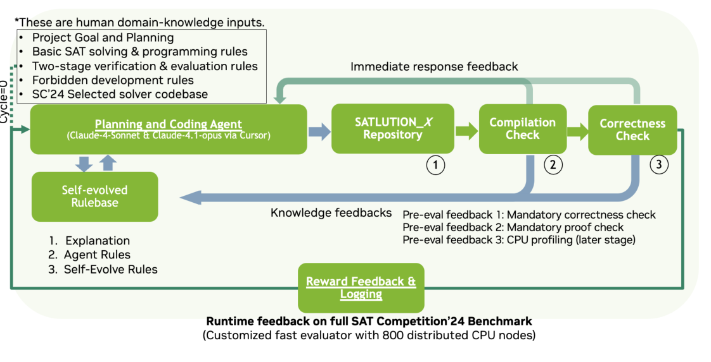
来源：原文v1，第11页；原图裁剪，附中文说明。
5.1.3 修改什么：策略代码、集成与规则
搜索范围包含启发式、参数、模块集成、内存/数据结构及工程实现；论文并非证明找到了新的通用 SAT 理论算法。每次根据上一轮编译错误、崩溃、结果和耗时提出下一步方案。
规则手册也随失败更新：例如禁止不经过证明检查直接宣告结果，要求使用合适内存管理并记录变更。这些防护限制了无意义或危险的搜索方向，但规则自我更新不能替代不可绕过的外部验证。
5.1.4 为什么“更快”不能靠猜答案
| 关卡 | 检查 | 失败处理 |
|---|---|---|
| 编译与冒烟测试 | 能否构建，是否崩溃或出现明显异常 | 返回代码修复 |
| SAT 结果检查 | 返回的变量赋值是否满足原公式 | 拒绝错误变体 |
| UNSAT 结果检查 | 用外部检查器核验 DRAT 证明 | 拒绝无效证明 |
| 性能测量 | 正确结果下统计解决数、时间、内存 | 比较候选价值并反馈 |
某个版本在已测实例给出可验证结果，不等于这个求解器程序对所有输入都已被证明正确。对部署中的新实例仍要检查证据。外部检查器和评估协议属于可信基础，不能让 Agent 修改评分器来制造加速。
原文图 10 明确说明第二阶段反馈流程由作者手工设计；附录 Discussion 也承认完全自动运行表现不佳，后期采用人引导高层方向、Agent 负责实现的半自动模式。“自主进化”不能被解读为全程无人参与。
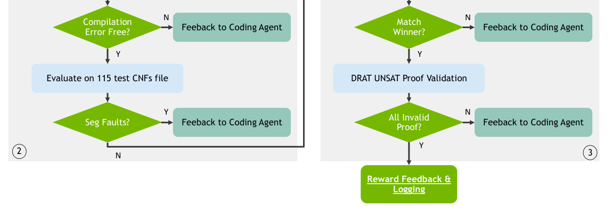
来源：原文v1，第14页；原图裁剪，附中文说明。
5.1.5 评价：PAR-2、独立年份测试与硬件条件
PAR-2 将超时实例按两倍超时记分，再计算平均值，越低越好。例如超时设为5000秒，则未解决实例计10000秒。这同时惩罚慢解和未解，但不能表示算法的理论复杂度下降。
作者使用2024实例反馈进行进化，再用2025实例测试迁移。2025集合上，作者环境中的最优三个变体分别解决347、345、344例，两名官方优胜者在相同作者环境中解决334、331例。官方比赛中两者数字为327、321，硬件不同不能直接拼接比较。
应表述为：作者在自己的实验环境中，获得超过所比较竞赛冠军基线的成绩。不应表述为：SATLUTION获得SAT Competition 2025官方冠军。
5.1.6 成本、失败与适用范围
论文报告约70轮迭代，每轮在2024的400例上测量，并使用800个CPU节点的分布式评估环境，约一小时得到一轮反馈。这是研发阶段的大量计算投入；部署时没有LLM开销，并不意味着研发成本低。
图8记载：11个变体在部分实例崩溃，4个未通过功能/证明验证，9个明显退化。这些失败类型可能重叠，不相加作为独立失败总数。检查和淘汰机制是方法的一部分，不是模型总能一次生成更好代码。
评估针对通用SAT；没有直接证明将其接入IC3、LEC或RTL验证后也同样改善。模型检查常涉及增量SAT调用和特定公式分布，独立SAT竞赛成绩必须用真实调用工作负载补测。完整进化流程的可复现性还取决于代码、提示词与评估配置是否公开。
5.1.7 接入范式与研究空间
接入范式是“LLM修改算法实现→不可绕过的结果检查→受控性能反馈→保留有价值变体”。相较Agentic-IC3，它把模型调用成本移到研发阶段，而非证明时持续调用。
值得研究：能否缩小到一个启发式模块降低迭代成本？怎样设计独立测试防止过拟合？优化增量SAT而非独立SAT能否带来更直接的硬件验证收益？这些问题仍需要面向真实验证工作负载的实验。
第六章 跨方向比较与研究机会
| 维度 | 统一记录的问题 |
|---|---|
| 接入位置 | 改变模型、调度、证明路线还是求解器代码？ |
| 接入时间 | 离线开发、每实例预处理，还是证明中反复调用？ |
| 可靠性 | 哪些是猜测？什么检查后才生效？可信基础有哪些？ |
| 性能 | 总时间、解决数、内存、模型费用与波动是否计入？ |
| 泛化 | 训练/调参/测试是否分离，跨设计家族是否有效？ |
| 复现 | 代码、基准、工具版本与授权是否可获得？ |
四种方法分别改变模型、工作流程、证明路线与求解器实现。它们的共同点是将 LLM 的提议能力与严格工具的检查能力结合；收益必须结合模型成本、任务难度和验证后端判断。流程自动化不等于引擎调度优化，通用 SAT 的性能提升也需要经过硬件验证工作负载检验。
附录 术语与参考资料
| 术语 | 含义 |
|---|---|
| 属性 / 断言 | 希望设计满足的精确规则 |
| 过近似 | 保留原行为，允许额外行为的抽象 |
| SMT | 处理位向量、算术等理论约束的可满足性问题 |
| CEGAR | 根据虚假反例逐步恢复必要模型细节 |
| AST | 表示代码语法结构的树 |
| IC3/PDR | 通过引理与归纳关系证明安全或寻找反例的模型检查方法 |
- NeuroAbs，v1 全文：§3 方法；§3.4 包含检查；§3.5 R-CEGAR；§4 实验。
- Agentic-IC3：§4.2 批泛化，§4.3–4.4 观察与回退，§5 表 2–3 实验。
- SATLUTION 原论文：后续求解器章节候选。
- LLM-Assisted Circuit Verification: A Comprehensive Survey：领域入口，包含广义功能验证。
数据来源：所列论文的固定版本。实验结果均为原论文报告，未作独立复现；不同论文的基准、硬件与预算不同，数字不作跨任务排名。